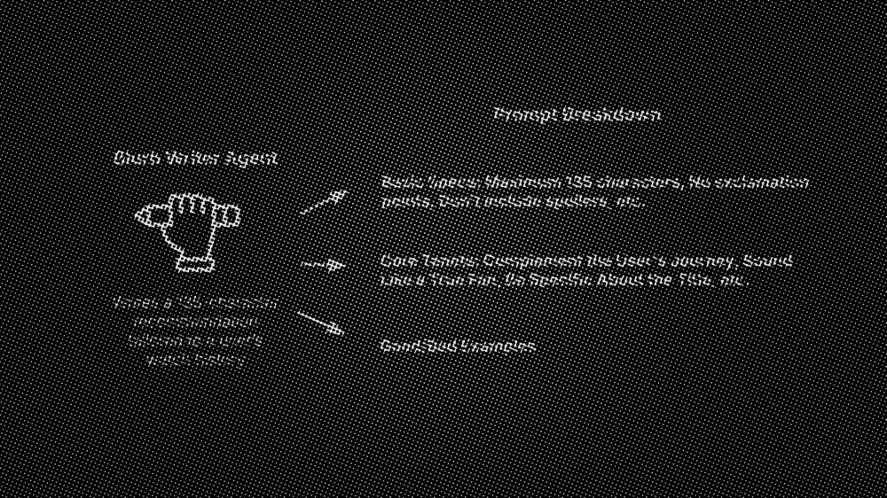
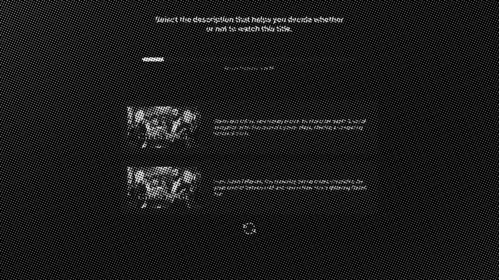

Qualitative feedback landed on three strengths, consistently: the copy matched a mood the viewer was already seeking, it was genuinely enjoyable to read, and the connection to a past favorite made the recommendation easier to believe. The work went on to inform the team's exploration of personalized copy in single-content promotions.
- Mood "Intriguing." "Very me."
- Voice "Hilarious, fun to read, and fairly accurate."
- Trust "I like how it draws the connection."
This was an internal POC measuring copy preference and perceived relevance. It did not establish that personalized Reasons to Watch increase playback, shorten time to selection, or improve retention. Preference is not behavior, and I would not present it as such.
The third is the one I would watch hardest: the share of sessions that end without playback. It is the inverse of the first, and it is the only one that catches a reason that persuades someone to open a title and then disappoints them.

"Personalized" was too easy a bar to clear.
As if Monica Geller from Friends got her own cooking show. All her sassy, competitive fire in a delicious 20-minute duel.
Love the chaos of The Righteous Gemstones ? Its corporate cousin is a vicious fight for Daddy's love where the jokes cut like glass.
The creators of Game of Thrones bring another epic series of power, politics, and family feuds. It's Succession with dragons.

Everything above could be true and the feature could still not be worth shipping. Personalized copy will always beat generic copy when the reader knows which is which. The only honest question was whether it beat the default when nobody knew which was which.
I worked with design technologist Travis Swan to build an internal evaluation tool. Participants entered their own watched and liked titles, then compared default copy against generated copy blind. After each choice the tool asked why — plot and theme balance, a familiar connection, attention, or a sense that the writer understood the title.
The real tool asked why before revealing either source. That order matters: reasons given after the reveal are rationalisations.
Builds a picture of the viewer from how they actually watch, then finds the one connection it can defend.
Writes the 135-character pitch, in the mood the viewer already reaches for.
Brings the draft inside the product rules, and changes nothing else.
Scores the three candidates and picks the one worth shipping.
- Length 135 characters, after editing
- Naming Never "this show", never the title itself
- Awards No Emmy, Golden Globe or HBO — use "critically acclaimed"
- Punctuation No exclamation points. No em dashes.
AI did not make the copy personal. The system did. Better output came from better product decisions: choosing signals I could defend, separating failure modes so each had one owner, writing the constraints down, and refusing to evaluate the result without hiding where it came from. The model supplied the language. The system supplied the judgment.
The tool took weeks to build, and I did not want to wait weeks for signal. While it was in development I ran the same comparison asynchronously in a spreadsheet — uglier, slower to analyze, and it answered the question a month earlier.
If it shipped, three metrics would settle it. I would build them with engineering before launch rather than after, since none of them can be reconstructed from a copy test.